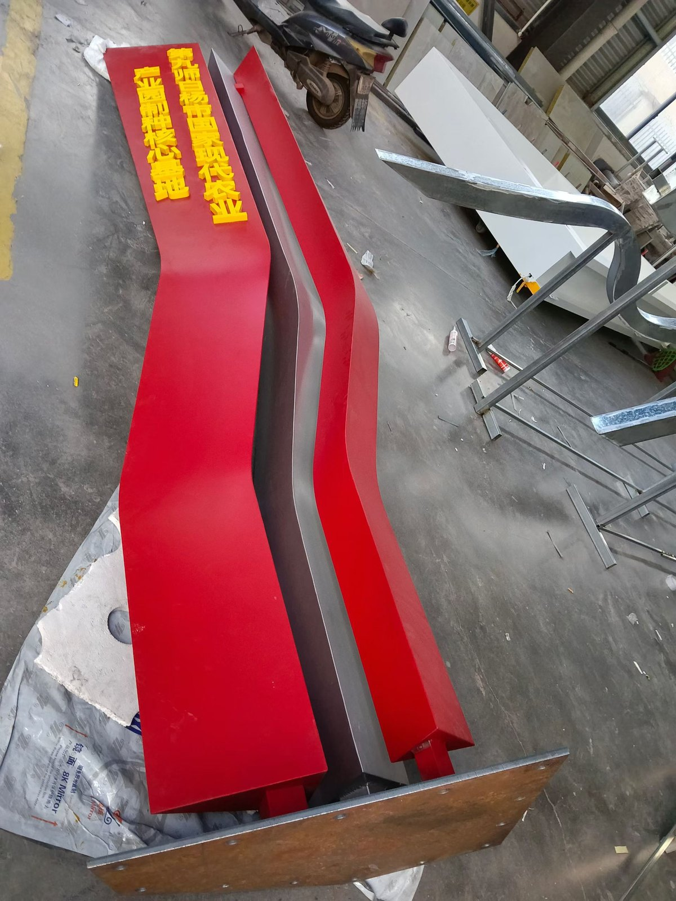
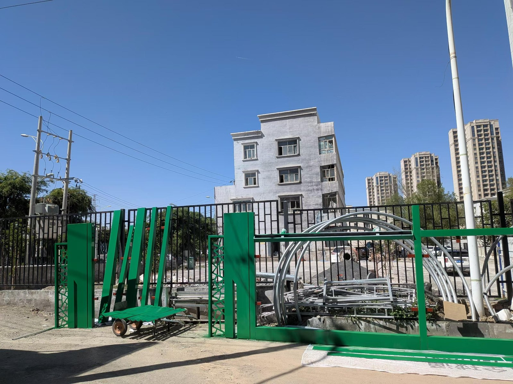

AL_2026_002 / 公共标识 / 装置Public Signage / Installation
堡垒式公共标识Fortress-Like Public Signage
户外标识形态、车间加工与最终安装记录。Outdoor sign form, workshop fabrication and final installation record.
标识Signage金属加工Metal Fabrication安装Installation

项目定位Project Role
这个项目适合作为公共标识 / 装置案例，重点展示形态、结构、加工与现场效果之间的关系。A public signage / installation case, showing the relation between form, structure, fabrication and final street presence.


下载 / 视频Downloads / Video